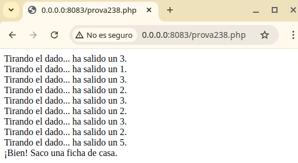

Els operadors condicionals permeten assignar un valor depenent d'una condició.
Operador
Nom
Exemple
Resultat
?:
Ternari
$x = expr1 ? expr2 : expr3
Assigna a $x el valor d'expr2 si expr1 és TRUE; en cas contrari, li assigna expr3.
??
Fusió nul·la
$x = expr1 ?? expr2
Assigna a $x el valor d'expr1 si este existix i no és NULL. Si expr1 no existix o és NULL, s'assigna expr2. (Disponible des de PHP 7)
Exemple d'operador ternari
<?php$hora=14;$formato=($hora>12)?24:12;echo"El formato es de $formato horas"?>
🖼️ Figura 2.7: Exemple d'operador ternari i cadena formatada
Operador Elvis
Si volem comprovar si una variable té valor i, si no, donar-li un valor determinat, usarem l'operador ?: (es coneix com l'operador Elvis - https://en.wikipedia.org/wiki/Elvis_operator) amb la sintaxi expresión ?: valorSiVacio.
<?php$nombre="";echo"Nombre: ".($nombre?:"desconocido").PHP_EOL;// se envía a través de un formulario:// $nombre = "";// $nombre = $_GET['nombre'] ?: "desconocido";?>
La condició simple es realitza mitjançant la instrucció if. Entre parèntesis es posa la condició que s'avalua a true o false. Si no es posen claus, en compte d'obrir un bloc, s'executarà només la instrucció següent.
Sempre claus
És recomanable posar claus sempre, encara que en el moment de codificar només hi haja una única instrucció. D'esta manera, queda preparat per a afegir més contingut en el futur sense provocar bugs.
<?php$hora=8;// La hora en formato de 24 horasif($hora===8){echo"Suena el despertador.";}echo"<br>";if($hora===8)echo"Suena el despertador.";?>
🖼️ Figura 2.9: Exemple de sentència condicional if
Les condicions compostes mitjançant if-else:
<?php$hora=17;// La hora en formato de 24 horasif($hora<=12){echo"Son las ".$hora." de la mañana";}else{echo"Son las ".($hora-12)." de la tarde";}?>
🖼️ Figura 2.10: Exemple de sentència condicional if-else
Les condicions niuades mitjançant if-else if-else:
<?php$hora=14;// La hora en formato de 24 horasif($hora===8){echo"Es la hora de desayunar.";}elseif($hora===14){echo"Es la hora de la comida.";}elseif($hora===21){echo"Es la hora de la cena.";}else{echo"Ahora no toca comer.";}?>
🖼️ Figura 2.11: Exemple de sentència condicional if-else-if-else
La sentència switch també permet treballar amb condicions múltiples:
<?php$hora=12;// La hora en formato de 24 horasswitch($hora){case9:echo"Es la hora de desayunar.";break;case14:echo"Es la hora de la comida.";break;case21:echo"Es la hora de la cena.";break;default:echo"Ahora no toca comer";}?>
🖼️ Figura 2.12: Exemple de sentència condicional switch
No oblides el break
Un error molt comú és oblidar la instrucció break després de cada cas. Si no el posem, executarà el cas següent automàticament.
La sentència match es va introduir en la versió 8.0 i és molt semblant a l'estructura de switch, però té algunes diferències importants:
match retorna un valor.
No requerix usar break al final de cada cas.
Utilitza comparacions estrictes (===), la qual cosa significa que tant el tipus com el valor han de coincidir.
<?php$estado='ok';$resultado=match($estado){'ok'=>'Todo está bien.','error'=>'Ha ocurrido un error.','pendiente'=>'Todavía está pendiente.',default=>'Estado desconocido.',// opción por defecto, similar a "default" en switch};echo$resultado;// Imprime: Todo está bien.?>
<?php$numero=10;$resultado=match(true){$numero<0=>'Número negativo',$numero===0=>'Es cero',$numero>0=>'Número positivo',};echo$resultado;// Imprime: Número positivo.?>
El bucle do-while sempre executarà el bloc de codi almenys una vegada, després verificarà la condició i repetirà el bucle mentre la condició especificada siga vertadera.
<?phpdo{$dado=rand(1,6);// rand() devuelve un valor aleatorioecho"Tirando el dado... ";echo"ha salido un ".$dado.".";echo"<br>";}while($dado!=5);echo"¡Bien! Saco una ficha de casa.";?>

🖼️ Figura 2.14: Exemple de sentència repetitiva do-while
PHP, de la mateixa manera que Java i C, permet trencar els bucles mitjançant la instrucció break. Al seu torn, continue permet botar a la iteració següent.
Si pots, evita break i continue
No és desitjable usar-los. És preferible l'ús de variables flag per a controlar l'eixida dels bucles.
<?php$salir=false;for($i=1;$i<=10&&!$salir;$i++){if($i===5){echo"Salgo cuando i=5";$salir=true;}}?>
🖼️ Figura 2.17: Exemple d'ús de variable flag per a substituir break o continue
 2.3. Operadors¶
2.3. Operadors¶